Equipment
Fender Telecaster
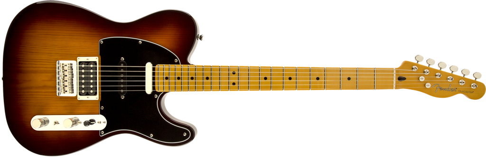
Modern Player guitars deliver thoroughly modern features and distinctively unconventional takes on revered Fender instruments. The Modern Player Telecaster Plus is that rarest of birds—a three-pickup Tele® model, further distinguished by a pine body, Stratocaster® middle pickup, powerful humbucking bridge pickup, special switching and more. One of the most individual and tonally versatile Telecaster models Fender has ever offered.
Model Name: Modern Player Telecaster® Plus, Maple Fingerboard, Honey Burst
Model Number: 0241102542
Series: Modern Player
Color: Honey Burst
Body
Body Material: Pine
Body Finish: Gloss Polyester
Body Shape: Telecaster®
Neck
Neck Material: 1-Piece Maple
Neck Finish: Gloss Polyester
Neck Shape: “C” Shape
Scale Length: 25.5” (64.8 cm)
Fingerboard: Maple
Fingerboard Radius: 9.5” (241 mm)
Number of Frets: 22
Fret Size: Jumbo
String Nut: Synthetic Bone
Nut Width: 1.650” (42 mm)
Position Inlays: Black Dots
Electronics
Bridge Pickup: Modern Player Humbucking
Middle Pickup: Modern Player Single-Coil Strat
Neck Pickup: Modern Player Tele
Controls: Master Volume, Master Tone
Pickup Switching: 5-Position Blade: Position 1. Bridge Pickup, Position 2. Bridge and Middle Pickup, Position 3. Middle Pickup, Position 4. Middle and Neck Pickup, Position 5. Neck Pickup
Pickup Configuration: HSS
Hardware
Bridge: 6-Saddle Vintage-Style Strat® Strings-Through-Body Hardtail
Hardware Finish: Nickel/Chrome
Tuning Machines: Vintage-Style
Pickguard: 3-Ply Black
Control Knobs: Knurled Dome
Auxiliary Switching: Mini-Toggle Rear Coil Selector Switch
Neck Plate: 4-Bolt
Miscellaneous Strings: Fender® USA, NPS, (.009-.042 Gauges)
Amp Settings
Fender Blues Jr. III
Volume: 3.5
Fat: OFF
Treble: 4.5
Bass: 7.0
Middle: 11.0
Master: 4.0
Reverb: 2.0
Joyo Tremolo
Intensity: 25%
Rate: 25%
Fender Mustang I v.2
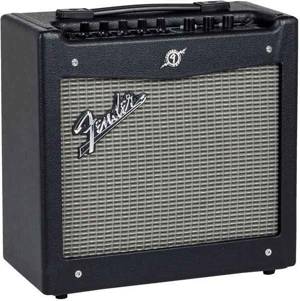
The standard for modern guitar versatility and muscle. Mustang amps are incredible Fender tone machines for today’s guitarists, driven by remarkably authentic amp models, a wealth of built-in effects and easy USB connectivity. And like no other amps, Mustang models make it easy to record, edit, store and share your music.
Ideal for guitarists new to digital recording, the versatile Mustang I delivers an exciting ride for such a compact and easily portable design, with great tone from 20 watts of power, an 8” speaker and an astounding array of features.
Electronics
Voltage: 120V
Wattage: 20 Watts
Controls: Gain, Volume, Treble, Bass, Master, Preset Select, Modulation Select, Delay/Reverb Select, Save Button, Exit Button, Tap Tempo Button
Channels: One
Inputs: One - 1/4”
Hardware
Cabinet Material: 7-Ply 3/4” Medium-Density Fibreboard
Amplifier Covering: Black Textured Vinyl
Grille Cloth: Silver
Amplifier Jewel: Red LED
Front Panel: Black
Handle: Molded Plastic Strap with Black Powder Coated Caps
Speakers
Speakers: One - 8” Fender® Special Design
Speaker Wattage: 20 Watts
Total Impedance: 8 ohms
Measurements
Amp Height: 14.5” (36.83 cm)
Amp Width: 15.5” (40 cm)
Amp Depth: 7.6” (19.3cm)
Amp Weight: 17 lbs (7.7 kg)
Art & Lutherie Parlor Guitar
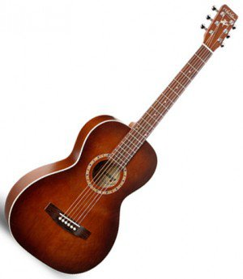
- Body Type Ami
- Case Gig Bag
- Country of Origin Canada
- Electronics None
- Fingerboard Rosewood
- Finish Burgundy, Semi-Gloss Custom Varnish
- Neck Silver Leaf Maple
- Nut Graphtech Tusq
- Part # 023523
- Pickguard None
- Saddle Graphtech Tusq
- Top/Body Material Spruce / Wild Cherry
Fender Blues Jr III
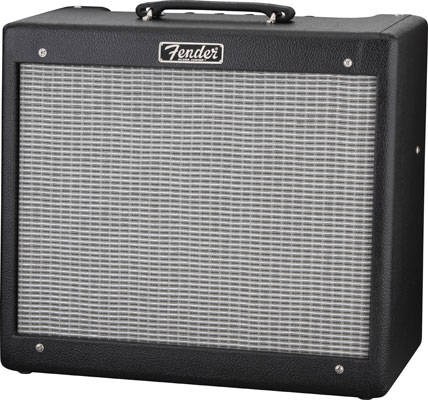
Fender Hot Rod series amplifiers are found on every stage in the world, large and small, and are used by guitarists from all walks of life. Hot Rod amps deliver unmistakable Fender tone and are the perfect platform for musicians to craft their own signature sound. These no-frills amps are affordable, reliable and loud, and they pair extremely well with stomp boxes. The Blues Junior III is a 15-watt warm-toned, longtime favorite - the perfect grab-and-go tube amp for stage and studio. It is known for the fat mid tones characteristic of EL-84 output tubes, warm 12AX7 preamp tube overdrive, real spring reverb, simple control layout, footswitchable FAT boost and external speaker capability.
Features:
Black control panel with front-reading text
New badge
Vintage Fender dog bone handle
Vintage-size jewel light
Sparkle circuit mod
Rattle-reducing shock absorbers for the EL84 tubes
Highly sensitive Fender Special Design 12 lightning bolt speaker by Eminence
Heavy-duty set-screw chicken head knobs.
Electronics
Voltage: 120V
Wattage: 15 Watts
Inputs: One
Extension Speaker Jack: External Speaker Jack
Channels: One Channel
Rectifier: Solid State Rectifier
Controls: Reverb, Master, Middle, Bass, Treble, “Fat” Switch, Volume
Hardware
Hardware Finish: Chrome
Pilot Light Jewel: Red Amp Jewel
Handle: “Dog Bone” Handle
Front Panel: Black Front Panel
Grill Cover Cloth: Black Textured Vinyl Covering with Blackface Style Black/Silver Grille Cloth
Input Impedance: 1 M Input Impedance
Output Impedance: 8 Ohm
Amplifier Length: 9.18” (23.31 cm)
Amplifier Width: 18” (45.72 cm)
Amplifier Height: 16” (40.6 cm)
Amplifier Weight: 31 lbs. (14.06 kg)
Effects: Spring Reverb
Speakers
Speaker: 12 inch, 8 ohm, 50 Watt Fender Lightning Bolt speaker by Eminence
Tubes
Pre Amp Tubes: 3 x 12AX7
Power Tubes: 2 x EL84
Miscellaneous
Unique Features: Black control panel, New badge, Rattle reducing shock absorbers for EL84 tubes, Fat Switch
Accessories
FootSwitch: Uses Optional 1-Button Footswitch, p/n 0994054000
Knobs: Chicken head-style amp knobs
Gibson Les Paul
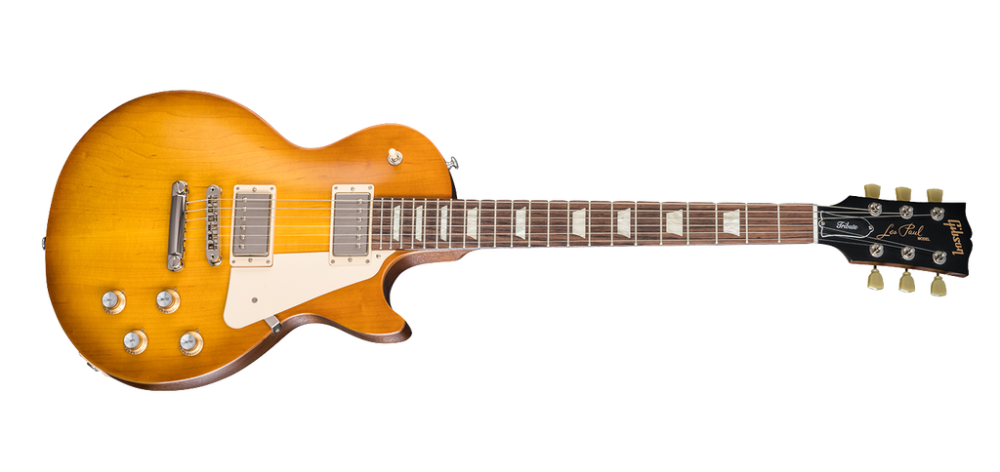
The Les Paul Tribute captures the historic character of the legendary Les Paul guitar. Historic Gibson tonewoods, carved top, cream pickguard, vintage-style tuners, trapezoid inlays, and boosted PAF-inspired pickups give this impressive guitar classic looks and sound with an elegant, vintage touch. No weight relief for those players who like to feel the authenticity of history in their hands.
Body
Wood Species: Plain Maple Top with a Mahogany Body
Finish: Satin Nitrocellulose Lacquer | Satin Faded Honeyburst
Neck
Material: Mahogany
Neck Profile: Slim Taper
Scale Length: 24.75”
Fingerboard Material: Rosewood
Fingerboard Radius: 12”
Number of Frets: 22
Frets: Medium - Cryogenically Treated
Nut Material: Tektoid
Nut Width: 1.695”
End of Board Width: 2.26”
Inlays: Acrylic Trapezoids
Hardware
Finish: Nickel
Bridge: Aluminum Tune-O-Matic
Tailpiece: Aluminum Stop Bar
Tuning Machines: Vintage Style Keystones
Pick Guard: Cream
Control Knobs: Gold top hats with silver inserts and pointers
Switch Tip: Cream
Switch Washer: Cream (not mounted)
Jack Plate Cover: Cream
Electronics
Neck Pickup: 490R
Bridge Pickup: 498T
Controls: 2 volumes, 2 tones, 1 toggle switch
Accessories
Strings: .09, .011, .016, .026, .036, .046
Case: Soft Case
Other: Includes Gibson Accessory Kit
SKUs
LPTR18FHNH1, LPTR18SGNH1
Amp Settings
Fender Blues Jr. III
Volume: 4.0
Fat: OFF
Treble: 5.0
Bass: 7.0
Middle: 5.0
Master: 3.0
Reverb: 3.0
Joyo Tremolo
Intensity: 25%
Rate: 25%
ZOOM Multi-FX Processor
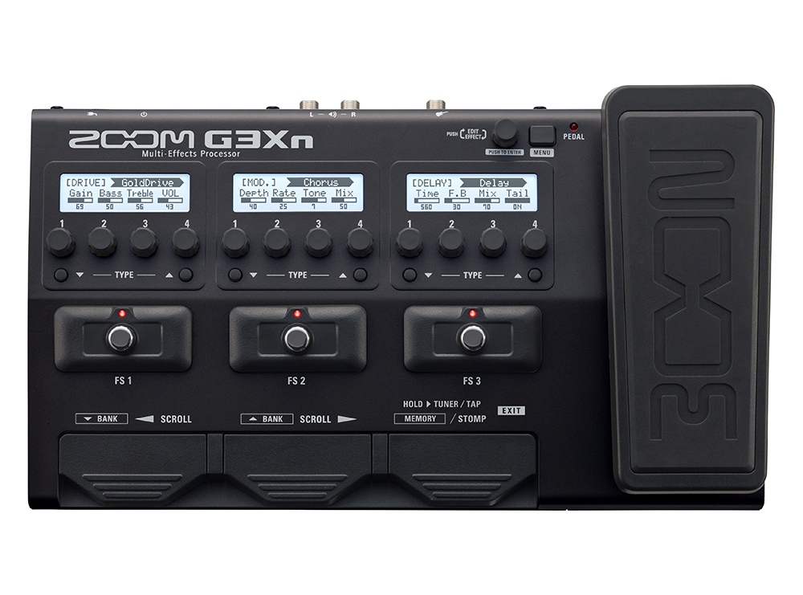
Features At A Glance
- 70 (68 effects, 1 looper pedal, and 1 rhythm pedal) onboard high-quality digital effects, including distortion, overdrive, EQ, compression, delay, reverb, flanging, phasing, and chorusing
- 5 new amp emulators plus 5 cabinet emulators
- 75 custom-designed factory patches
- Free ZOOM Guitar Lab Mac/Windows software allows
downloading of additional effects and patches - Use up to 7 effects simultaneously, chained together in
any order - 3 stompbox switches allow effects to instantly be brought in and out
- 3 independent editing displays
- Auto Save function for automatic saving of all patch parameters
- Onboard chromatic tuner with dedicated footswitch supports all standard guitar tunings, including open and drop tunings
- Tuner range of 435 - 445 Hz
- Stereo/mono Looper allows recording of up to 80 seconds of phrase recording
- 68 built-in rhythm patterns that can be used in conjunction with the Looper
- Tap Tempo with dedicated footswitch
- Input jack accepts standard guitar cable
- Auxiliary stereo input jack for connection of smartphones and music players
- Dual output jacks for connection to guitar amps and mono or stereo PA systems
- Stereo headphone output
- Included AC adapter
Fender Stratocaster

A tonally versatile guitar with time-honored Fender style and sound, the Deluxe Strat has a few tricks up its sleeve. Special switching unlocks extra pickup combinations for those moments you find yourself needing a little extra kick to stand out. Combining noise-free performance with enhanced playing comfort, this sleek instrument is a truly deluxe performer that excels on stage and in the studio.
Model Name: Stratocaster Deluxe Strat®
Model Number: 0147103303
Series: Deluxe Strat®
Color: 2-Color Sunburst
Body
Body Material: Ash
Body Finish: Gloss Polyester
Body Shape: Stratocaster®
Neck
Neck Material: Maple
Neck Finish: Satin Urethane
Neck Shape: Modern “C”
Scale Length: 25.5” (648 mm)
Fingerboard Material: Pau Ferro
Fingerboard Radius: 12” (305 mm)
Number of Frets: 22
Fret Size: Narrow Tall
Nut Material: Synthetic Bone
Nut Width: 1.650” (42 mm)
Position Inlays: White Pearloid Dots
Truss Rod: Standard
Truss Rod Nut: 3/16” Hex Adjustment
Electronics
Bridge Pickup: Vintage Noiseless™ Single-Coil Strat®
Middle Pickup: Vintage Noiseless™ Single-Coil Strat®
Neck Pickup: Vintage Noiseless™ Single-Coil Strat®
Controls: Master Volume, Tone 1. (Neck/Middle Pickups), Tone 2. (Bridge Pickup)
Switching: 5-Position Blade: Position 1. Bridge, Position 2. Bridge and Middle, Position 3. Middle, Position 4. Middle and Neck (Plus Bridge When Push/Push Switch Is Activated), Position 5. Neck (Plus Bridge When Push/Push Switch Is Activated)
Configuration: SSS
Hardware
Bridge: 2-Point Synchronized Tremolo with Bent Steel Saddles
Hardware Finish: Nickel/Chrome
Tuning Machines: Deluxe Cast/Sealed Locking with Vintage Style Button
Pickguard: 3-Ply Black
Control Knobs: Aged White Plastic
Switch Tip: Aged White
Neck Plate: 4-Bolt Asymmetrical
Miscellaneous
Strings: Fender® USA 250L Nickel Plated Steel (.009-.042 Gauges)
Accessories
Case/Gig Bag: Deluxe Gig Bag
Amp Settings
Fender Blues Jr. III
Volume: 3.5
Fat: OFF
Treble: 4.5
Bass: 7.0
Middle: 11.0
Master: 4.0
Reverb: 2.0
Joyo Tremolo
Intensity: 25%
Rate: 25%
Fender Jaguar
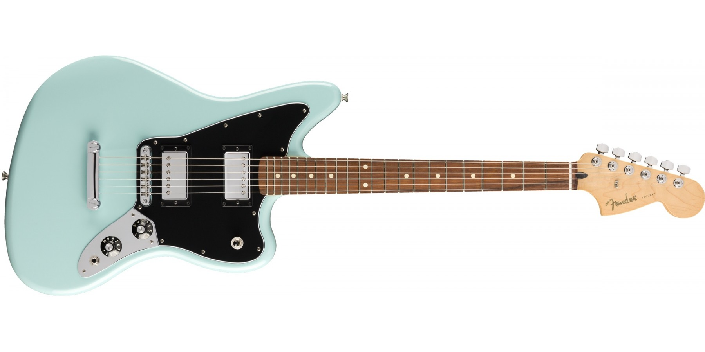
Respecting their heritage while offering a modern twist on a classic, Fender’s Player Series Jaguar updates the popular short-scale instrument with modern features and pickups. Starting with the surf, indie rock and punk favorite’s iconic offset body and easy-playing 24” scale length, Fender fines the design with freshly designed Player Series pickups, for an exceptional range of available tones. The maple neck now boasts a contemporary 9.5” radius pau ferro fingerboard, and the Adjusto-matic bridge and anchored tailpiece offers stable tuning and rock-solid intonation. Always a guitar for the musically adventurous, the Player Series Jaguar is ready for you to create whatever music floats into your head.
Model Name: Jaguar
Model Number: 014-0223-504
Series: FSR Player
Color: Daphne Blue
Body
Shape: Jaguar® (Double cutaway offset)
Type: Solid body
Material: Alder
Finish: Gloss Polyester
Pickguard: 3-Ply Black
Neck
Shape: Modern C
Wood: Maple
Joint: 4-Bolt with “F” Logo
Scale length: 24 in. (610 mm)
Truss rod: Standard, 3/16” Hex Adjustment
Finish: Satin Urethane Finish on Back of Neck with Gloss Urethane Headstock Face
Fingerboard
Material: Pau Ferro
Radius: 9.5 in.
Fret size: Medium jumbo
Number of frets: 22
Inlays: Dot
Nut width/material: 1.65 in. (42 mm) Synthetic Bone
Pickups
Configuration: HH
Neck: Player Series Alnico 2 Humbucking
Bridge: Player Series Alnico 2 Humbucking
Controls
Control layout: Master volume, Master tone
Control knobs: Skirted Amp Knobs
Pickup switch: 3-Position Blade: Position 1. Bridge Pickup, Position 2. Bridge and Neck Pickups, Position 3. Neck Pickup
Hardware
Bridge type: Fixed
Bridge design: Adjusto-matic
Tailpiece: Stopbar
Tuning machines: Die-cast sealed
Color: Nickel/chrome
Miscellaneous
Strings: Nickel Plated Steel (.009-.042 Gauges)
JOYO JF-09 TREMOLO
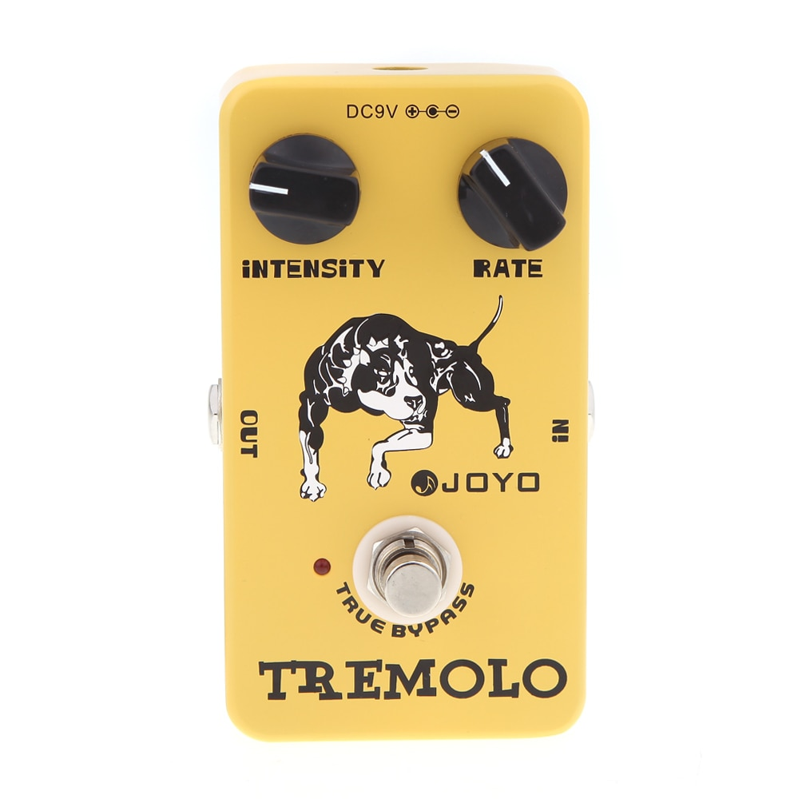
This is the tremolo of the beloved classic tube amplifiers–using the same photoelectric tube circuitry as the trem in those amps of old. Intensity and Rate knobs make it easy to adjust the tone and vibe. True bypass design minimizes tone loss. Aluminum alloy casing with stoving varnish finish.
Blue Yeti
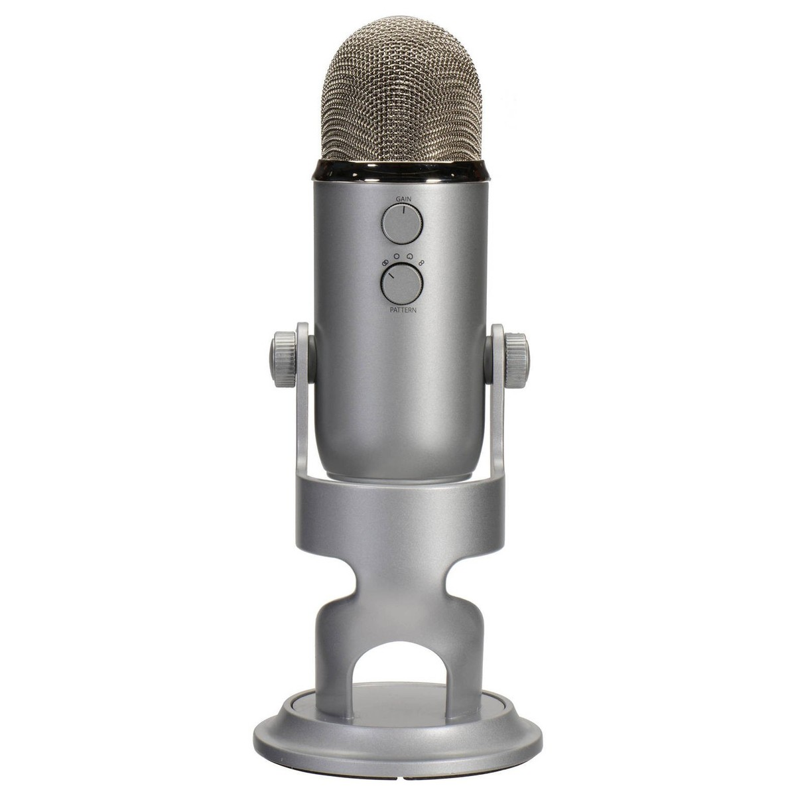
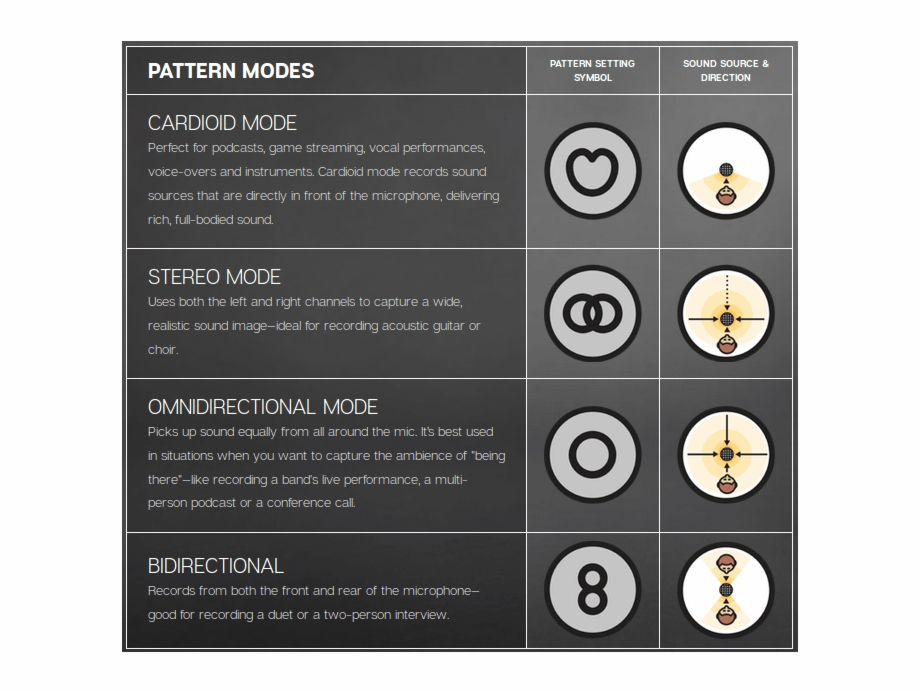
Power Required/Consumption: 5V 150mA
Sample Rate: 48 kHz Bit Rate: 16-bit
Capsules: 3 Blue-proprietary 14mm condenser capsules
Polar Patterns: Cardioid, Bidirectional, Omnidirectional, Stereo
Frequency Response: 20Hz - 20kHz Max
Dimensions (extended in stand): 4.72” (12cm) x 4.92”(12.5cm) x 11.61”(29.5cm)
Weight (microphone): 1.2 lbs (.55 kg)
Weight (stand): 2.2 lbs (1 kg)
Headphone Amplifier
Impedance: 16 ohms
Power Output (RMS): 130 mW
THD: 0.009%
Frequency Response: 15 Hz - 22 kHz
Signal to Noise: 100dB
Mac Studio
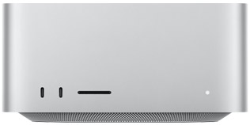
Apple M1 Max chip
- 10-core CPU with 8 performance cores and 2 efficiency cores
- 24-core GPU
- 16-core Neural Engine
- 400GB/s memory bandwidth
Media engine
- Hardware-accelerated H.264, HEVC, ProRes and ProRes RAW
- Video decode engine
- Two video encode engines
- Two ProRes encode and decode engines
Memory
32GB unified memory
Storage
512GB SSD
Video Support
Thunderbolt 4 digital video output supports
- Native DisplayPort output over USB‑C
- Thunderbolt 2, DVI and VGA output supported using adapters (sold separately)
HDMI display video output
- Support for one display with up to 4K resolution at 60Hz
- DVI output using HDMI to DVI Adapter (sold separately)
Audio
- Built-in speaker
- 3.5 mm headphone jack with advanced support for high-impedance headphones
- HDMI port supports multichannel audio output
Connections
Four Thunderbolt 4 ports with support for:
Thunderbolt 4 (up to 40Gb/s)
DisplayPort
USB 4 (up to 40Gb/s)
USB 3.1 Gen 2 (up to 10Gb/s)
Two USB-A ports (up to 5Gb/s)
HDMI port
10Gb Ethernet
3.5 mm headphone jack
On front (M1 Max):
- Two USB‑C ports (up to 10Gb/s)
- SDXC card slot (UHS-II)
Communications
Wi-Fi
- 802.11ax Wi-Fi 6 wireless networking
- IEEE 802.11a/b/g/n/ac compatible
Bluetooth
- Bluetooth 5.0 wireless technology
Ethernet
- 10Gb Ethernet (Nbase-T Ethernet with support for 1Gb, 2.5Gb, 5Gb and 10Gb Ethernet using RJ-45 connector)
Studio Display
5K Retina display
- 27-inch (diagonal) 5K Retina display
- 5120-by-2880 resolution at 218 pixels per inch
- 600 nits brightness
- Support for 1 billion colours
- Wide colour (P3)
- True Tone technology
Camera
- 12MP Ultra Wide camera with 122° field of view
- ƒ/2.4 aperture
- Center Stage
Audio
- High-fidelity six-speaker system with force-cancelling woofers
- Wide stereo sound
- Support for Spatial Audio when playing music or video with Dolby Atmos
- Studio-quality three-mic array with high signal-to-noise ratio and directional beamforming
- Support for “Hey Siri”
Connections
One Thunderbolt 3 (USB-C) port, three USB-C ports
- One upstream Thunderbolt 3 (USB-C) port for host (with 96W host charging)
- Three downstream USB-C ports (up to 10Gb/s) for connecting peripherals, storage and networking